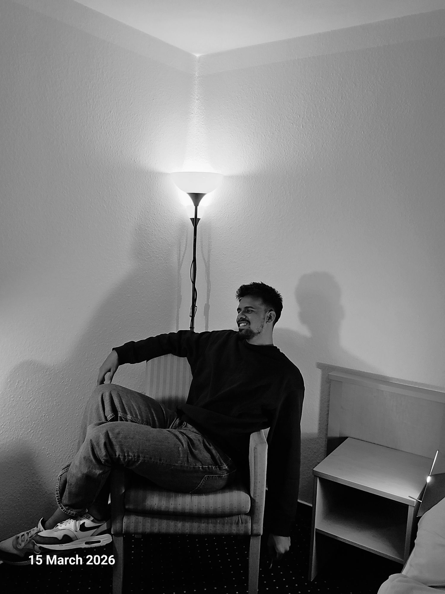
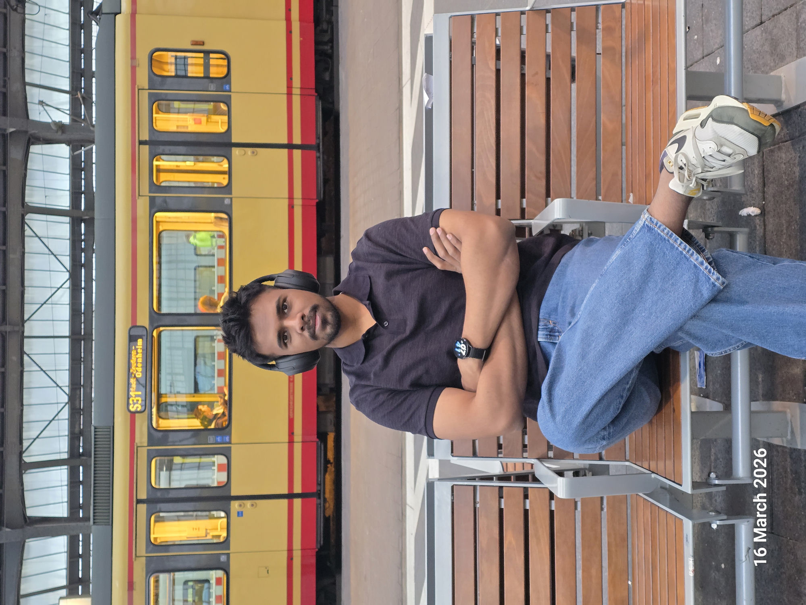

Meditations
Marcus Aurelius
800+
ETL PIPELINES OWNED

Most engineers wait to be told. I go looking for the failure nobody has flagged yet. The monitoring gap, the manual recovery, the fragile handoff. I own it before it becomes an incident. Leadership isn't a title somebody hands you. It's the work you pick up first.
Three years inside a manufacturing data platform taught me that reliability isn't a feature you add. It's a discipline you build into everything from day one. I own 800+ ETL pipelines and 30+ data products across plants in Germany and Detroit, but the work I'm proudest of is the stuff nobody asked for: Vortex, an engineering intelligence platform I built because the team needed governance and lineage before they knew to ask for it.
An enterprise engineering intelligence platform built from scratch because governance and lineage were nobody’s job. Five MCP servers, 30+ repository integrations, AI-assisted analytics over the whole estate.
Classifies a failure, retries it, validates the output, and only escalates when the classification says fatal. Recovers 3–5 failed executions a day with nobody touching them.
Automated ETL health checks, alerting and dashboards across 800+ pipelines, turning reactive firefighting into something you can see coming. ~75% less manual monitoring.
A medallion architecture, bronze through silver to gold, with MCP integration so business analytics can be asked in plain language instead of SQL.
Led the data engineering workstream. Zero pipeline failures, zero business disruption. The kind of quiet win nobody notices unless it goes wrong.
Became the person called first when something looked wrong in production, then made it repeatable by introducing AI-assisted code review that catches leaked secrets, vulnerable dependencies and compliance gaps before they ship.
~82% prediction accuracy using ML classification and feature engineering on clinical questionnaire data, built for early screening where clinical access is limited.
Top 5 of 100+ teams. A CNN hitting ~87% accuracy across 1,000+ labelled leaf images, cutting misclassification by roughly 20% against the baseline.
For sustained reliability engineering across the pipeline estate. The unglamorous work of keeping 800+ pipelines boring.
For integrity in engineering practice and decision-making.
For continuous learning and technical curiosity across the platform and AI tracks. The one that fits best.
Visvesvaraya Technological University (VTU), Mysuru, India.

The instinct to fix what's broken before it's flagged didn't start at Daimler. Since 2017, I've led a family-founded NGO's community programs: vaccination drives and health camps, reaching 100+ people a year. I rebuilt its coordination from scratch and cut overhead by roughly 80%. Same pattern: find the friction, remove it, move on. A black belt in Goju-Ryu taught me the other half: showing up consistently, for years, matters more than any single breakthrough. I'm currently terrible at violin, which is its own useful lesson in patience.
Pull one out.
Hover a spine.
Hover a spine.
Hover a spine.
The road is where I think. Nothing to debug, nowhere to be, no screen.
Learning it as an adult, badly and in public. Worth being a beginner at something.
Black belt and championship titles. Years of showing up to the same dojo floor, long before any of them.
Led the team. Learned there that authority is given by the people you lead, never by the armband.
New places, mostly for the part where nothing is familiar yet.
Since 2017 I have led community programmes for the Women & Children Welfare Association, a family-founded NGO. Vaccination drives, health camps, awareness campaigns. Roughly a hundred people reached a year.
The part I am proudest of is not the turnout. It is that I rebuilt how the whole thing coordinates: the scheduling, the volunteer rosters, the follow-ups all moved to digital tools, and the logistical overhead dropped by about 80%. The same instinct as the day job, applied where nobody is paying for it.
Hover for the handle. Discord copies on click.